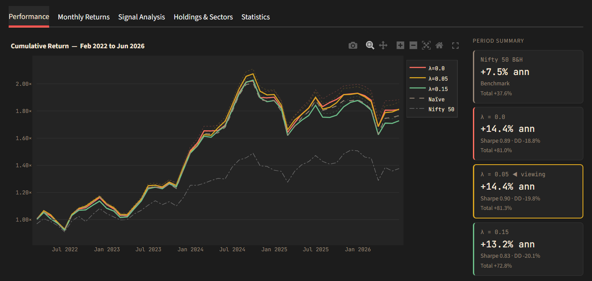

Do momentum and quality still earn their keep on Indian large-caps once you pay real trading costs?
What I built
A long-only strategy that ranks NSE stocks on combined momentum and quality signals, weighting the two by their information coefficient rather than by gut feel. Portfolios are built with a quadratic-programming optimiser under real-world constraints, then tested walk-forward with transaction costs — all explorable in an interactive dashboard.
The finance behind it
Factor investing, signal combination, and portfolio construction under constraints. The part that actually matters: out-of-sample testing and costs are what separate a real edge from a curve-fit.

